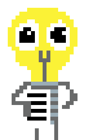
Lucie
une course pour la science ouverte
jouer
Les personnages
Cette ampoule mutante pleine d'idées cherche à diffuser ses articles au plus grand nombre de lecteurs
et pour cela elle doit avoir au moins un article en accès ouvert (OA). En évitant les éditeurs prédateurs,
elle doit déposer ses articles soit sur les archives ouvertes soit les publier avec les éditeurs en accès
ouvert. Mais attention, certaines pratiques en accès ouvert peuvent lui coûter cher (littéralement, mais pas que…).
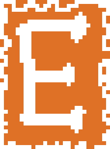
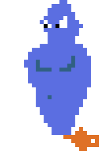
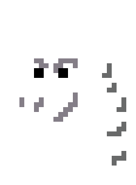
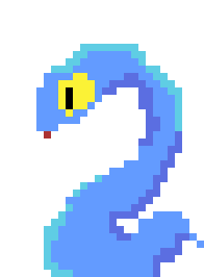
Les éditeurs prédateurs
-1 article / -30 lecteurs
Les « Big Five » de l'édition scientifique vont tout tenter pour récupérer les articles de Lucie.
Avec une marge de profit qui peut dépasser les 40%, ils ont tout intérêt en que l'accès ouvert ne
se développe pas ou, mieux, qu'il se développe, mais à leur manière (tiens, les APCs…).
La faune de l'édition scientifique compte aussi avec de plus petits éditeurs (souvent associatifs)
qui pourraient disparaître s'ils se mettaient à éditer en accès ouvert.
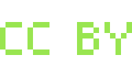
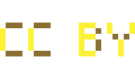
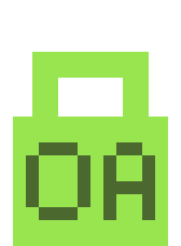
Les éditeurs en accès ouvert (OA) & licences
+1 article / +50 lecteurs
CC BY : bouclier (7s)
CC BY NC-ND : -20 lecteurs
Les éditeurs en accès ouvert distribuent souvent leurs articles soit sous
CC-BY-NC-ND (on doit indiquer l'auteur, pas d'utilisation commerciale
et pas d'œuvre dérivée) soit sous CC-BY (il suffit d'indiquer l'auteur).
La licence CC-BY-NC-ND ampute une (grosse) partie des droits de l'auteur
et restreint la diffusion de son travail : adieu aux traductions, aux ressources éducatives et d'autres
travaux dérivés. En plus, si la structure éditrice venait à disparaître, bon courage pour rééditer l'article…
+1 article / +25 lecteurs
CC BY NC-ND : -20 lecteurs
C'est ce qui nous reste à tenter quand on publie chez un éditeur en « accès fermé ».
Lucie dépose sur une archive ouverte la version originale de son manuscrit, la prépublication
ou preprint (sans les corrections reçues à la suite de l'évaluation par les pairs).
Quelques années après, elle peut mettre en ligne la version corrigée — mais sans la mise en page
de l'éditeur. Et bien sûr, bye bye au CC-BY :
les éditeurs imposent la CC-BY-NC-ND.
L'édition ouverte et les frais de publication (APCs)
+1 article / +50 lecteurs
APCs : archives OA et Green OA disparaissent / + de monstres (7s)
En gros, c'est traître. Plutôt que de faire payer le lecteur, on fait payer l'auteur ou les
institutions de recherche. Ce système peut occasionner d'importantes inégalités (qui paie plus,
publie plus et s'achète une autorité scientifique). Plutôt que bander les yeux du lecteur avec
une paywall, on préfère museler les auteurs qui ne peuvent pas payer et, de prime, on
s'affiche avec un label Open Access.
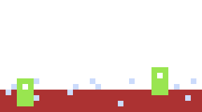
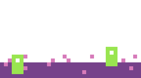
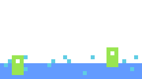
Les archives ouvertes
+1 article / +50 lecteurs
Ces « bibliothèques numériques » garantissent un accès libre aux articles. Elles sont financées
par des organismes nationaux (HAL), européens (Zenodo) ou des organisations à but non lucratif (arXiv).
Le dépôt est gratuit mais soumis à certaines conditions : les auteurs doivent s'enregistrer, parfois
l'affiliation à une institution de recherche est requise (Zenodo est le plus « chill » par rapport à ça)
et le contenu doit être adapté.
+1 article / bouclier (2s)
Couperin est un consortium sous la forme d'association loi 1901 qui mobilise les établissements
de l'Enseignement supérieur et de la Recherche français. C'est un sacré bouclier contre les APCs,
car il permet aux chercheurs des établissements associés d'en être exonérés. Couperin est financé
par les cotisations de ces derniers ainsi que par des subventions du ministère de l'Enseignement
supérieur et de la Recherche.
SciHub & Cie
+10 lecteurs / + de monstres (5s)
SciHub est un site qui arrive à déjouer les paywalls des grands éditeurs et donner accès
illégalement aux articles publiés chez eux. Si ce site illégal est un personnage dans ce jeu —
il est vilain, répétons-le sagement — c'est parce qu'il a bousculé l'ensemble des acteurs de la
science ouverte : il diffuse si bien les articles des grands éditeurs que publier en accès ouvert
n'apporterait désormais guère d'avantages concernant la visibilité des articles…
SciHub est l'icône des « shadow libraries » : des bibliothèques numériques illégales qui se
spécialisent parfois dans une ou plusieurs disciplines.
Conçu pour sensibiliser les étudiants de l'enseignement supérieur sur les enjeux de la science ouverte,
le jeu « Lucie : une course pour la science ouverte » se veut une ressource éducative libre (REL) et évolutive.
Inspiré des mécanismes de « Chrome Dino », le jeu présente les personnages emblématiques de la science ouverte
en France : les cinq grands éditeurs qui monopolisent le marché de l'édition scientifique, les éditeurs en accès
ouvert avec les deux types de licence (CC BY et CC BY NC-ND), le modèle économique des APCs, ainsi que les archives
ouvertes (Zenodo, Arxiv et HAL). À ceux-là s'ajoutent l'association Couperin et SciHub, site illégal de
téléchargement d'articles qui a bousculé l'ensemble des acteurs de l'édition scientifique.